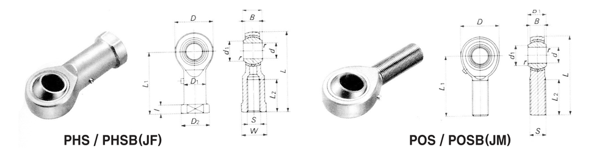

Rod Ends
로드 엔드 베어링
볼 역할을 하는 내륜과 나사홈이 있는 목(Thread)을 부착한 하우징으로 구성된 자동조심형 미끄럼 베어링으로, 자동차·중장비·농기계 등 다양한 기계류의 링크 장치에 사용됩니다.
PHS/PHSB(암나사)와 POS/POSB(수나사) 계열, 급유식 다이캐스트형인 PHSA 계열, 그리고 오일리스(무급유)형인 JMT/JFT/JMTS/JFTS 계열로 공급됩니다.
형번 또는 치수 일부만 입력해도 검색됩니다.
당사 SWS 카탈로그 규격 도면

d · 나사(S) · D · B · L1
형번 / 규격 검색
JF 시리즈26건
형번
d
나사(S)
D
B
L1
JF, PHS 3 3 M3X0.5 12 4.5 21 JF, PHS 4 4 M4X0.7 14 5.3 24 JF, PHS 5 5 M5X0.8 16 6 27 JF, PHS 6 6 M6X1.0 18 6.75 30 JF, PHS 8 8 M8X1.25 22 9 36 JF, PHS 10 10 M10X1.5 26 10.5 43 JF, PHS 12 12 M12X1.75 30 12 50 JF, PHS 14 14 M14X2.0 34 13.5 57 JF, PHS 16 16 M16X2.0 38 15 64 JF, PHS 18 18 M18X1.5 42 16.5 71 JF, PHS 20 20 M20X1.5 46 18 77 JF, PHS 22 22 M22X1.5 50 20 84 JF, PHS 25 25 M24X2.0 60 22 94
형번
d
나사(S)
D
B
L1
JF, PHS 28 28 M27X2.0 66 25 103 JF, PHS 30 30 M30X2.0 70 25 110 JF, PHSB 2 3.2 0.138-32 11.9 4.7 20.6 JF, PHSB 2.5 3.9 0.164-32 14.3 5.6 22.2 JF, PHSB 3 4.8 3/16-32 15.9 6.4 26.9 JF, PHSB 4 6.4 1/4-28 19.05 7.1 33.3 JF, PHSB 5 7.9 5/16-24 22.2 8.7 34.9 JF, PHSB 6 9.5 3/8-24 25.4 10.3 41.2 JF, PHSB 7 11.1 7/16-20 28.6 11.1 46.1 JF, PHSB 8 12.7 1/2-20 33.3 12.7 53.9 JF, PHSB 10 15.8 5/8-18 38.1 14.3 63.5 JF, PHSB 12 19.05 3/4-16 44.4 17.5 73.1 JF, PHSB 16 25.4 1.25-12 69.8 25.4 104.8
JM 시리즈26건
형번
d
나사(S)
D
B
L1
JM, POS 3 3 M3X0.5 12 4.5 27 JM, POS 4 4 M4X0.7 14 5.3 30 JM, POS 5 5 M5X0.8 16 6 33 JM, POS 6 6 M6X1.0 18 6.75 36 JM, POS 8 8 M8X1.25 22 9 42 JM, POS 10 10 M10X1.5 26 10.5 48 JM, POS 12 12 M12X1.75 30 12 54 JM, POS 14 14 M14X2.0 34 13.5 60 JM, POS 16 16 M16X2.0 38 15 66 JM, POS 18 18 M18X1.5 42 16.5 72 JM, POS 20 20 M20X1.5 46 18 78 JM, POS 22 22 M22X1.5 50 20 84 JM, POS 25 25 M24X2.0 60 22 94
형번
d
나사(S)
D
B
L1
JM, POS 28 28 M27X2.0 66 25 103 JM, POS 30 30 M30X2.0 70 25 110 JM, POSB 2 3.2 0.138-32 11.9 4.7 23.8 JM, POSB 2.5 3.9 0.164-32 14.3 5.6 28.6 JM, POSB 3 4.8 3/16-32 15.9 6.4 31.7 JM, POSB 4 6.4 1/4-28 19.05 7.1 39.7 JM, POSB 5 7.9 5/16-24 22.2 8.7 47.6 JM, POSB 6 9.5 3/8-24 25.4 10.3 49.2 JM, POSB 7 11.1 7/16-20 28.6 11.1 53.9 JM, POSB 8 12.7 1/2-20 33.3 12.7 61.9 JM, POSB 10 15.8 5/8-18 38.1 14.3 66.6 JM, POSB 12 19.05 3/4-16 44.4 17.5 73.1 JM, POSB 16 25.4 1.25-12 69.8 25.4 104.8
PHSA 시리즈 (급유식 다이캐스트형, 암나사)10건
형번 d 나사(S) D B L1
PHSA 5 5 M5X0.8 17 6 27 PHSA 6 6 M6X1.0 19.5 6.75 30 PHSA 8 8 M8X1.25 24 9 36 PHSA 10 10 M10X1.5 28 10.5 43 PHSA 12 12 M12X1.75 32 12 50
형번 d 나사(S) D B L1
PHSA 14 14 M14X2.0 36 13.5 57 PHSA 16 16 M16X2.0 40 15 64 PHSA 18 18 M18X1.5 45 16.5 71 PHSA 20 20 M20X1.5 49 18 77 PHSA 22 22 M22X1.5 54 20 84
JMT 시리즈 (오일리스, 숫나사)14건
형번 d 나사(S) D B L1
JMT 3 3 M3X0.5 12 4.5 27 JMT 4 4 M4X0.7 14 5 30 JMT 5 5 M5X0.8 17 6 33.5 JMT 6 6 M6X1.0 18 6.75 36 JMT 8 8 M8X1.25 22 9 43 JMT 10 10 M10X1.5 27 9.75 48 JMT 12 12 M12X1.75 31 12 53.5
형번 d 나사(S) D B L1
JMT 14 14 M14X2.0 34.5 12.7 59.25 JMT 16 16 M16X2.0 39 15.2 65 JMT 18 18 M18X1.5 42.5 16.2 72.25 JMT 20 20 M20X1.5 46 17 80 JMT 22 22 M22X1.5 54 21 85 JMT 25 25 M24X2.0 64 23 96 JMT 30 30 M30X2.0 73 26 111
JFT 시리즈 (오일리스, 암나사)14건
형번 d D B L
JFT 3 3 12 4.5 27 JFT 4 4 14 5 31 JFT 5 5 16 6 35 JFT 6 6 18 6.75 39 JFT 8 8 22 9 47 JFT 10 10 27 10 56 JFT 12 12 31 12 66.5
형번 d D B L
JFT 14 14 35 13.5 75 JFT 16 16 39 15 83 JFT 18 18 43 16.5 92.5 JFT 20 20 46 18 101 JFT 22 22 54 20 111 JFT 25 25 64 22 126 JFT 30 30 73 26 145
JMTS 시리즈 (오일리스, 스테인리스, 숫나사)14건
형번 d 나사(S) D B L1
JMTS 3 3 M3X0.5 12 4.5 27 JMTS 4 4 M4X0.7 14 5 30 JMTS 5 5 M5X0.8 17 6 33.5 JMTS 6 6 M6X1.0 18 6.75 36 JMTS 8 8 M8X1.25 22.5 9 42.75 JMTS 10 10 M10X1.5 26 10.5 50 JMTS 12 12 M12X1.75 31 12.8 55.5
형번 d 나사(S) D B L1
JMTS 14 14 M14X2.0 37 13.5 59 JMTS 16 16 M16X2.0 40 15 68 JMTS 18 18 M18X1.5 44 16.5 73 JMTS 20 20 M20X1.5 48 18 81 JMTS 22 22 M22X1.5 54 21 85 JMTS 25 25 M24X2.0 64 23 96 JMTS 30 30 M30X2.0 73 26 111
JFTS 시리즈 (오일리스, 스테인리스, 암나사)14건
형번 d D B L
JFTS 3 3 12 4.5 27 JFTS 4 4 14 5 31 JFTS 5 5 16 6 35 JFTS 6 6 18 7 39 JFTS 8 8 22 9 47 JFTS 10 10 26 10.5 56 JFTS 12 12 30 12 65.5
형번 d D B L
JFTS 14 14 37 13.5 76 JFTS 16 16 39 15 83 JFTS 18 18 44 16.5 93 JFTS 20 20 48 18 102 JFTS 22 22 54 21 111 JFTS 25 25 64 23 126 JFTS 30 30 73 26 145
단위: mm
※ JF·JM 시리즈(PHS·POS와 동일 규격)는 당사 SWS 카탈로그를 기준으로 작성했습니다. JMT·JFT·JMTS·JFTS(오일리스형) 시리즈는 SWS 카탈로그에 없어
제조사 잘만정밀(JMC, jalman.com) 공식 자료를 기준으로 추가했습니다. PHSA 시리즈는 당사 IKO 카탈로그 기준이며, 원래 다른 페이지(필로볼·L볼·선회노즐·니들 베어링용 부품)에 중복 등재되어 있던 것을 이 페이지로 옮겨왔습니다. 정밀 가공·발주 전에는 반드시 당사 정식 규격표 원본으로 최종 확인하시기 바랍니다.